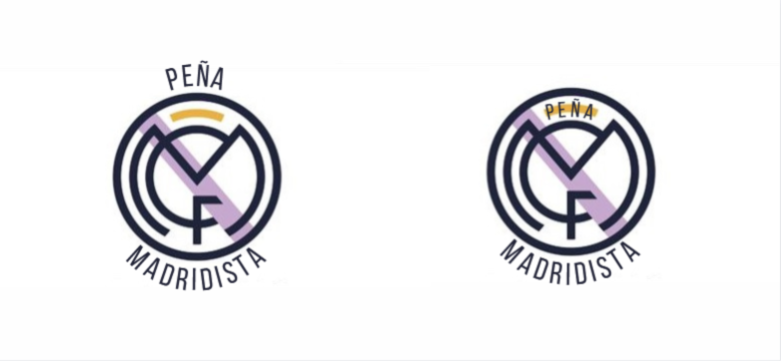
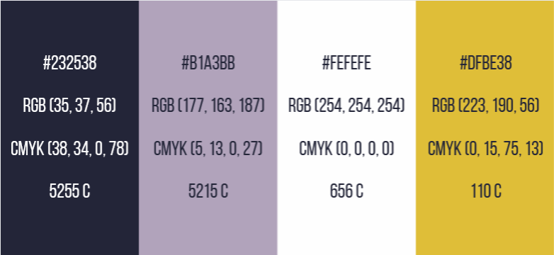
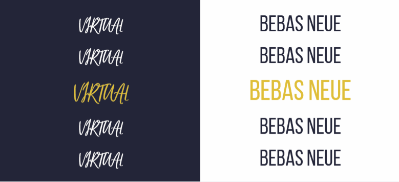

Peña Madridista Project
Branding | UI/UX Design | Logo Design | Mockups & Wireframes
Peña Madridista Project is another of our first projects that we never finished.
However, we intend to finish it and these are only the initial sketches.
General description:
La Peña Madridista is a passionate group of fans
of Real Madrid C.F. who get together to enjoy their favorite
team's games. Recently, they obtained their status as the club's official supporters club. The goal is to
attract millennials and convey a feeling of victory and freshness.
Key elements:
1. Logo Emblem:
- Design a logo that combines emblematic elements of Real Madrid with a modern touch.
- Use official club colors: white, yellow and shades of purple.
2. Inspiration in the Official Logo:
- Based on the official emblem of Real Madrid C.F. as starting point.
- Add elements that reflect the youth and passion of the millennials generation.
3. Sensation of Victory and Freshness:
- Represent the history of Real Madrid's triumphs.
- Transmit a current and dynamic image.
Logo details:
1. Shield and Crown:
- Use a stylized crown similar to that of the official shield.
- Add details that symbolize victory and energy.
2. Modern Elements:
- Incorporate clean and contemporary lines.
- Add a touch of freshness with geometric shapes.
3. Colors:
- White: Purity and tradition.
- Yellow: Triumph and passion.
- Shades of Purple: Youth and modernity.
Key message:
- "Peña Madridista: United by history, ready for the future."
Future of the project:
- Consider the application of the logo in merchandising, social networks and club events.



